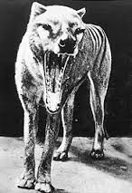
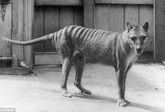
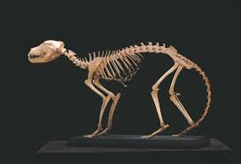

The tasmanian tiger was a very interesting animal that is now extinct. Another name for them is the thylacine. They were native to the continent of Australia. They were carnivores meaning they only ate meat. In fact, they were one of the top predators, if not the top, in Australia. The thylacine is one of the most unique extinct animals to this day.

Tasmanian Tiger Description
An average adult tasmanian tiger weighs around 66 lbs. They were about 1 meter long with a tail about 50cm. It was the largest marsupial carnivore before it was extinct. This title is now known to the southern elephant seal. There is not much known about the tasmanian tiger's lifespans.

Extinction of the Tiger
Tasmanian tigers used to live in Tasmania, which is Australia and parts of Papua New Guinea. They lived here because they enjoyed the open forest and grassland. The tasmanian tigers were nocturnal and usually lived alone or occassionally in small groups.They became extinct because humans were forcing them out of thier natural habitat by expanding the area in which they lived. They became officially extinct in 1936 when it passed away in Hobart Zoo.

Interesting Facts
The tasmanian tiger kind of looked like a large dog with short fur. Their jaws can open to a 120 degree angle. Female tasmanian tigers have pouches similar to that of a kangaroo to carry their offspring. They are called tigers because they have stripes on their backs and tails. Rewards have been offered to people who can find the tasmanian tiger but no successful sightings have been recently reported.